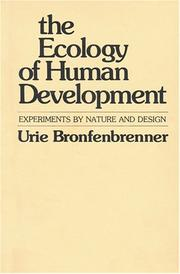

The Ecology of Human Development: Experiments by Nature and Design
Book·Urie Bronfenbrenner, 1979·人类发展生态学

The original work on ecological systems theory.
- Author
- Urie Bronfenbrenner
- Year
- 1979
- Difficulty
- Advanced
- Kind
- Primary text
- Schools
- Ecological Systems Theory
- Core theories
- Nested Environmental Systems
Editions
- English edition The Ecology of Human Development: Experiments by Nature and Design Urie Bronfenbrenner · Harvard University Press, first edition · 1979 Open Library ↗